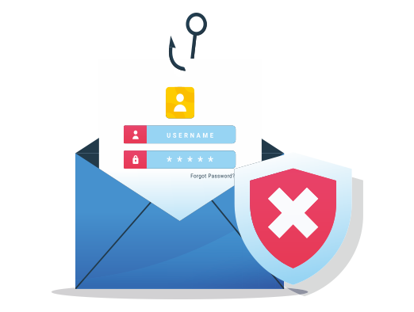

Business Email Compromise
O que é Business Email Compromise?
BEC é um tipo de golpe cibernético sofisticado que usa e-mails falsos para enganar pessoas e empresas, fazendo com que elas transfiram dinheiro ou informações confidenciais para os criminosos.Não é um vírus, nem um software malicioso. O BEC funciona como um "teatro" muito bem planejado, explorando a confiança humana e a urgência do dia a dia corporativo.
Como o BEC Funciona: O "Teatro" dos Golpistas
Os criminosos que aplicam o BEC são mestres da engenharia social. Eles pesquisam sua empresa, seus colegas e chefes para tornar o golpe o mais convincente possível. Veja as etapas: 1-Imitação Perfeita: O golpista se passa por alguém que você confia: seu chefe, um colega de outro departamento, um fornecedor importante ou até mesmo o CEO da empresa. Eles criam e-mails que parecem idênticos aos de uma comunicação legítima. 2-A "Isca" Urgente: O e-mail falso contém um pedido que parece urgente e importante. Exemplos comuns incluem: • "Preciso que você faça um pagamento imediato para este novo fornecedor." • "Mude os dados bancários do fornecedor X para a conta Y urgentemente!" • "Envie a lista de salários dos funcionários para esta conta, é confidencial." 3-O Alvo Principal: O objetivo final é sempre convencer a vítima a: • Transferir dinheiro: A forma mais comum, enviando fundos para uma conta controlada pelos criminosos. • Compartilhar informações confidenciais: Senhas, dados de clientes, informações financeiras. • Alterar dados de pagamentos: Fazendo com que a empresa pague um fornecedor na conta errada (a do golpista).
Por Que o BEC é Tão Perigoso?
O BEC é considerado um dos ataques cibernéticos mais graves e custosos. Por quê? • Prejuízos Financeiros Enormes: Empresas perdem bilhões de dólares anualmente. Um único ataque pode custar centenas de milhares ou até milhões de reais. • Não Usa Vírus: Ele não depende de softwares maliciosos. Isso significa que antivírus e filtros de spam tradicionais têm dificuldade em detectá-lo. • Dificuldade de Recuperação: Uma vez que o dinheiro é transferido, é quase impossível recuperá-lo. • Danos à Reputação: Além do dinheiro, a reputação da empresa pode ser seriamente prejudicada, afetando a confiança de clientes e parceiros. • Sofisticação Crescente: Os criminosos estão sempre aprimorando suas táticas, usando pesquisa aprofundada para criar golpes cada vez mais críveis.
Tipos Mais Comuns de BEC
• Fraude do CEO/Executivo: O golpista se passa pelo chefe ou CEO, pedindo transferências urgentes e confidenciais. • Fraude do Fornecedor/Fatura Falsa: O golpista se passa por um fornecedor, solicitando a mudança dos dados bancários para pagamentos futuros. • Comprometimento de Conta de E-mail (EAC): O criminoso invade a conta de e-mail de um funcionário legítimo e a usa para enviar golpes, tornando o ataque muito mais difícil de ser detectado. • Fraude de RH/Dados de Salários: O golpista se passa por um funcionário, pedindo a mudança da conta bancária de recebimento de salário, ou solicita dados de funcionários para roubo de identidade.
Como Prevenir o BEC: O Papel da Tecnologia e das Pessoas
1- Treinamento e Conscientização: • Eduque-se e Eduque Outros: Aprenda a identificar e-mails suspeitos e oriente seus colegas. Fique atento a erros de português, urgência excessiva e pedidos incomuns. • "Desconfie, Verifique e Confirme!": Se receber um e-mail suspeito, nunca responda ao próprio e-mail. Ligue para a pessoa, mande um WhatsApp ou vá pessoalmente confirmar o pedido, usando contatos que você já conhece. 2- Segurança de E-mail (Seu Papel como TI): • Configure Protocolos de Autenticação: Implementar e gerenciar SPF, DKIM e DMARC. Essas ferramentas ajudam a verificar a autenticidade dos e-mails e a impedir que criminosos falsifiquem o domínio da sua empresa. • Soluções de Segurança Avançadas: Utilize e-mail gateways de segurança que filtram spam, detectam domínios "parecidos" e analisam o conteúdo do e-mail em busca de sinais de engenharia social. 3- Autenticação e Procedimentos Rígidos: • Autenticação Multifator (MFA): Ative a MFA para todas as suas contas de e-mail e sistemas importantes! Mesmo que alguém roube sua senha, precisará de um segundo fator (código no celular, biometria) para acessar a conta. Isso é fundamental contra o comprometimento de contas. • Processos de Dupla Verificação: Empresas devem ter regras claras que exigem a confirmação por um segundo canal (uma ligação, por exemplo) para qualquer pagamento ou alteração de dados bancários, especialmente para valores altos. Múltiplas aprovações também são essenciais. • Políticas de Senhas Fortes: Use senhas longas e complexas, e considere o uso de gerenciadores de senhas.
Emerson Pedroso de Morais Junior e Maria Eduarda Fortes de Brito